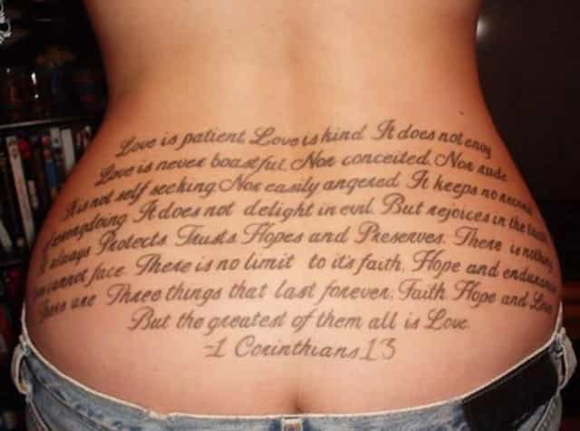

< < < Back
5 Reasons Why Girls With Tattoos And Piercings Are Broken – Return Of Kings
No girl has ever improved her looks with a gaudy mural injected under her skin or a piece of metal dangling from her nostrils. There’s no man on Earth who has ever thought about his girlfriend or wife, “Man, you know what would make her even sexier? A butterfly emblazoned just over her ass.” Yet despite this objective reality, thousands of girls continue to mutilate themselves at an astounding rate, to the point where more girls now have tattoos than men. Here are the reasons why you should shun these girls like they’re lepers.
1. They’re sluts
What kind of girl would be comfortable lying down half-naked in public for two hours while some fat dude with a dirty beard jams a sharp needle into her skin? Answer: the kind of girl who takes sharp objects in her vagina as a hobby. Girls with tattoos and/or piercings (aside from earrings) are slags who fall in and out of guys’ beds at a moment’s notice. If you’re unfortunate enough to commit to a girl with ink on her body or metal in her face, she’ll cheat on you at the drop of a hat. Tattoos and piercings are the mark of the whore, which is why in more traditional countries like the Philippines, only whores have them.
One of the first girls I ever banged was a self-styled “piercing addict.” She had multiple ear piercings, a stud in her nose, a tongue piercing, and both nipples pierced. While we were dating, she was also bragging about how she was going to get her clit pierced (oh lucky me). In the time that I knew her, she went on to bang two of my friends, as well as at least four other guys I knew, within a span of two months. She would later get busted by campus police for turning tricks on the side.

2. They have no foresight
Even in our degenerate society, people with visible tattoos and piercings have difficulty getting jobs. Not even minimum wage employers will hire them, because no one wants their Big Mac or Double Crappuccino served by an Apocalypto extra. Girls who get inked or pierced are showing that they can’t be trusted to plan for the future. They don’t care that their stupid choices will consign them to living off their parents for the rest of their lives: all they care about is their individuality.
Not only that, but girls with tattoos specifically have no idea that their cool designs will be destroyed by aging. Gravity and Father Time work their magic on us all, and your taut flesh will eventually sag and wrinkle like a raisin in the sun. A chick who can’t comprehend that the awesome Narnia scene tattooed on her back will look like Technicolor vomit when she’s 40 is too dumb to be the mother of your children.
3. They’re selfish
The reasons girls get tattoos and piercings—“I’m doing it for ME!”—are indicative of narcissism and mild psychopathy. Girls get tattoos for the same reasons they cut their hair short: a desperate attempt to assert how unique and special they are. A girl who willfully disfigures herself like this will never attempt to please you or do anything nice for you. She won’t care for you when you’re sick, will refuse to sleep with you for completely arbitrary reasons, and will generally be a moody, unlikable cunt.
4. They’re boring
Girls’ logic when it comes to tattoos is best described by paraphrasing Lena Dunham’s character in Girls: “I have a tattoo, and that just makes me naturally interesting.” Nothing could be further from the truth. My experience shows me that girls with ink and/or metal are the most boring, conformist chicks you’ll ever come across. To be fair, most girls are dull as dirt, but tattooed and pierced girls are aggressively dull, assaulting you with the most hackneyed left-wing tripe you’ll ever hear.
My “piercing addict” girlfriend, for example, identified as a Marxist (I shit you not) based on one class she took on Latin America and was constantly talking my ear off about some “injustice” or another. The joke was that before she took that class, she was so tuned out to current events that she wasn’t even registered to vote. I derived incredible pleasure from shoving my cock in her mouth to shut her up.
5. They’re mentally ill
This is the clincher. Any girl who thinks that a getting a ring in her nose or a Bible verse on her back is a good idea is going to be off her rocker. In my entire life, I have never met an inked or pierced girl who wasn’t sick in the head, whether they had depression, “anxiety” or a full-blown personality disorder. While girls with facial piercings and tattoos on the arms or legs can at least feign normality, chicks with piercings or tattoos on or near their erogenous zones (breasts, labia, ass) are the kinds of broads who will cut you with a knife.
Going back to the “piercing addict,” she was a complete masochist who would burst into tears every time after we had sex, crying about how I wasn’t banging her hard enough. Another girlfriend of mine who had a tramp stamp was a full-on borderline, starting fights for no reason to try provoke me into hitting and slapping her. She also casually referred to black people with the n-word in mixed company despite being a racial minority herself. Both girls were absolute maniacs in the sack—we’re talking nails-digging-into-my-back kind of sex—but outside of the bedroom, they were one bad day from a complete breakdown.
The only good thing about tattoos and piercings is that they signal which girls you can bang with minimal effort. If you’re looking to make a girl wince during anal on the first date, pick the one with a tramp stamp or a tongue piercing. But if you’re looking for a girl you can wife up, go for the ones who haven’t mangled their bodies beyond repair.
Read More: 5 Reasons Why You Should Never Date A Girl With Dyed Hair